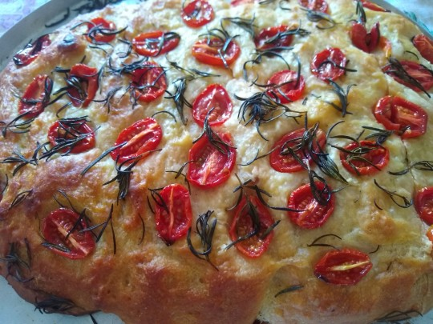

Receita de Focaccia
Ingredientes
- 360 ml de água em temperatura ambiente ou morna
- 1/3 colher (sopa) de açúcar
- 3/4 colher (sopa) de fermento biológico seco
- 400 g farinha de trigo
- 50 ml azeite extravirgem
- 1 colher (chá) de sal
- sal grosso a gosto
- alecrim a gosto
- azeite extra virgem para untar, trabalhar a massa e finalização
Modo de Preparo
- Em um recipiente alto, misture a água, o açúcar e o fermento biológico seco.
- Adicione os demais ingredientes e misture com uma colher, a mistura ficará líquida e elástica, bem pegajosa.
- Deixe descansar por 2 horas em ambiente quente e úmido (eu crio essa estufa ligando o forno com um recipiente com água enquanto preparo a mistura e desligo antes de deixar lá dentro).
- O descanso também pode ser por 12 horas em geladeira coberto com filme plástico.
- A massa deverá ter pelo menos dobrado o tamanho e ficado um pouco mais resistente.
- Abra-a com as mãos com bastante azeite em forma retangular baixa untada também com azeite. Tamanho: 30 x 40 cm.
- Salpique pela superfície, o sal grosso e o alecrim o quanto bastar.
- Fure com a ponta dos dedos toda a massa para criar sulcos e penetrar os temperos adicionados (esse processo também cria a aparência da verdadeira Focaccia Genovese).
- Pincele com mais azeite extravirgem toda a superfície.
- Deixe o tabuleiro montado descansar por mais 1 hora.
- Asse em forno médio a alto, entre 230-250° C, por aproximadamente 20 minutos ou até dourar.
- Retire do forno e deixe esfriar somente um pouco
- Desenforme ainda quente e deixe em uma grade, pois enquanto esfria a massa transpira o que pode mudar a textura crocante da casca.
- Pincele mais azeite extra virgem.
- Corte em pequenos triângulos para serem servidos como petiscos acompanhados de pastinhas ou em pedaços maiores para rechear e servir como sanduíche.
